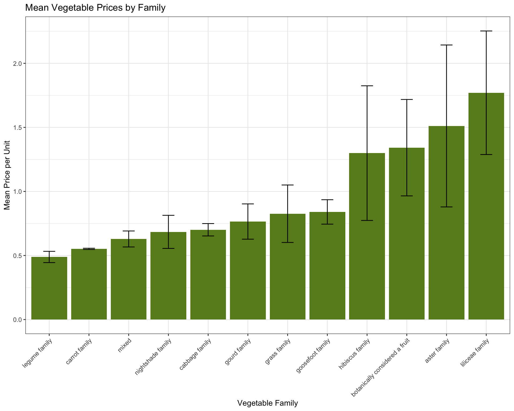
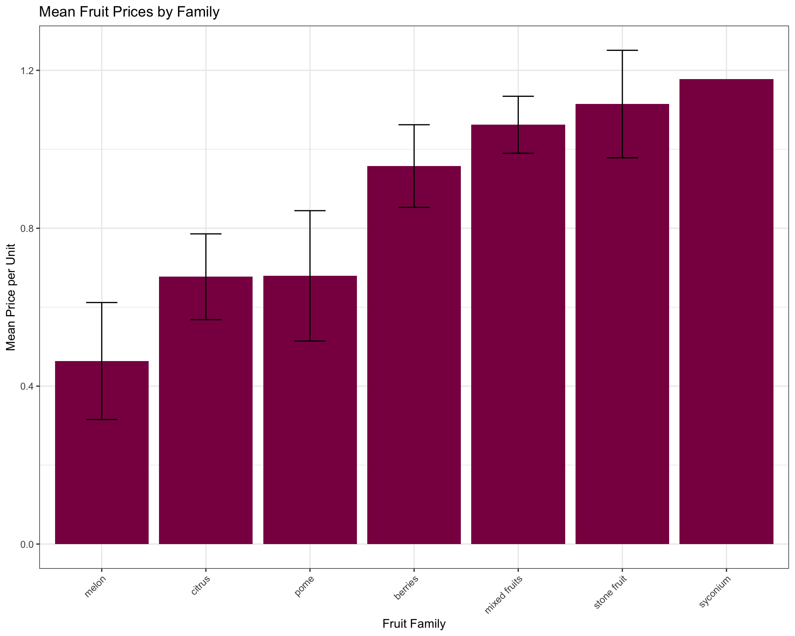
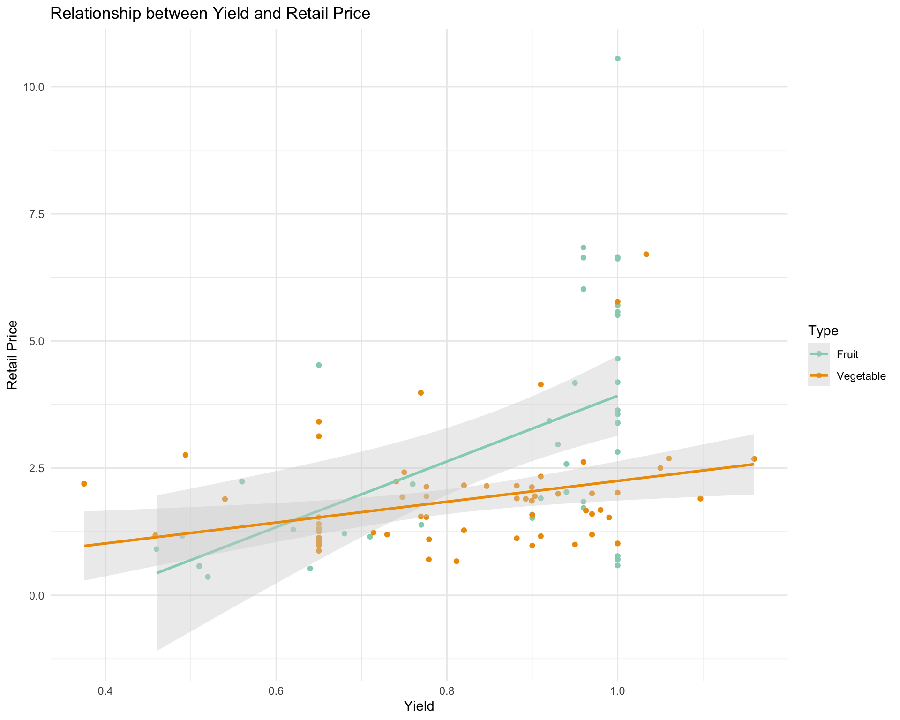

With the cost of living on the rise (McCants (2023)), it is important to determine how essential factors, such as food prices, are modulated. Though just a piece of the puzzle, the cost of fruits and vegetables can weigh heavily on consumers decisions in the grocery store (Sweitzer (2025)). The central aim of this project is to understand how different factors impact retail price of fruits and vegetables in the United States. We selected factors such as yield, produce family, and produce form for the present analysis.
The guiding questions for this study were:
How does the price of fruits and vegetables varies based on form?
Do fruit and vegetable prices vary by family?
What is the relationship between yield and retail price of produce?
Methods
For this project, the Fruit and Vegetable Prices data from the USDA Economic Research Service (ERS (2025)) was used to shed light on questions such as how the price of fruits and vegetables varies based on form, if fruit and vegetable prices vary by family, and how yield impacts price of produce. This data contains information about over 150 types of fresh and processed fruit and vegetables.
To begin our analysis, we started by compiling and cleaning the raw data provided by the USDA Economic Research Service. To this end, we used the following packages: Müller (2025), Firke (2024), Chan et al. (2023), Wickham et al. (2019), Xie (2025), Wickham et al. (2023), Feinerer and Hornik (2025), team (2025).
First, we imported the data using the list.files argument and rbinded our files to make a fruit and a vegetable data frame.
Once all of the data was imported, we had to clean and tidy the data frames as they were incredibly messy. In this step, we removed rows without data, renamed columns, and extracted irrelevant information such as citations and instructions. Code to complete this action can be found below.
For our research questions, some specific data formatting and tidying was necessary. For research question one, how the price of fruits and vegetables varies based on form, we needed to alter the form category to better allow for analysis. For example, tomatoes were listed as “Grape”, “Roma”, and “Large” rather than just fresh. We simple converted the information to say “Fresh” so it was in alignment with other vegetables in the data frame.
Our second research question required the most synthesis as it pertained to information not originally provided in the data set. To supplement, we did research on what families each fruit and vegetable in the data set belonged to. Using this information, we grouped fruits into seven families: stone fruit, berries, pomes, citrus, melons, mixed fruits, and synconiums (USDA (2018)). Vegetables were grouped into 13 families (Foundation (2016); Gardening (2010)), with one of the families being foods that are culinarily vegetables, but botanically classed as fruits. These were kept with the fruits as the culinary classification was more appropriate for our questions.
Finally, for research question three minimal alterations were made to the data frame for analysis. A column indicating if a produce item was a fruit or a vegetable was added to assist in grouping for analysis.
Results
Below are descriptive tables of the data (Table Table 1) and (Table Table 2).
Table 1: Mean Retail Prices of Fruits and Vegetables by Form
Type
Fresh
Frozen
Canned
Dried
Fruit
2.08
2.37
4.53
6.51
Vegetable
1.85
2.16
1.54
1.65
Table 2: Mean Retail Prices of Fruits and Vegetables by Family
Family
Mean Retail Price
aster family
2.20
berries
2.84
botanically considered a fruit
4.00
cabbage family
1.85
carrot family
1.40
citrus
1.09
goosefoot family
1.57
gourd family
1.39
grass family
1.53
hibiscus family
2.92
legume family
1.46
liliceae family
3.39
melon
0.61
mixed
1.67
mixed fruits
2.29
nightshade family
1.65
pome
1.39
stone fruit
3.45
syconium
6.84
Code
#|label: fig-1#|fig-cap: "average retail price by fruit form."#|echo: false#|warning: false#|results: asis# plotting average retail price by fruit formfruit_summary |>ggplot(aes(x = form, y = mean_retail_price, fill = form)) +geom_bar(stat ="identity") +geom_errorbar(aes(ymin = mean_retail_price - se_price, ymax = mean_retail_price + se_price), width =0.3) +labs(title ="Average Fruit Retail Prices by Form",x ="Form",y ="Average Retail Price") +scale_fill_manual(values =c("#005f73", "#0a9396", "#94d2bd", "#e9d8a6", "#ee9b00", "#ca6702", "#bb3e03")) +theme(theme_minimal(),legend.position ="NULL",axis.text.x =element_text(angle =45, hjust =1),panel.background =element_blank(), plot.background =element_blank())
Figure 1 shows that the retail price of fruits varied significantly by form, (F(6) = 12.59, p < .001). In running a post-hoc test, dried fruits were priced significantly higher than all other forms. However, there were no other differences between forms. The retail price of vegetables did NOT vary significantly by form (F(3) = 1.424, p = .243).
Code
#|label: fig-3#|fig-cap: "average retail price by veggie family"#|echo: false#|warning: false#|include: true#|results: asisfamily_plot_veg <-ggplot(summary_table, aes(x =reorder(family, mean_price), y = mean_price)) +geom_col(fill ="olivedrab4") +geom_errorbar(aes(ymin = mean_price - se_price, ymax = mean_price + se_price), width =0.3) +labs(x ="Vegetable Family", y ="Mean Price per Unit", title ="Mean Vegetable Prices by Family") +theme_bw() +theme(axis.text.x =element_text(angle =45, hjust =1))family_plot_veg

Code
#|label: fig-4#|echo: false#|fig-cap: "average retail price by fruit family"#|warning: false#|include: true#|results: asis#plotplot_table1 <- fruit_family_data %>%group_by(family) %>%summarize(mean_price =mean(cup_eq_price, na.rm =TRUE),sd_price =sd(cup_eq_price, na.rm =TRUE),n =n(),se_price = sd_price /sqrt(n) )family_plot_fruit <-ggplot(plot_table1, aes(x =reorder(family, mean_price), y = mean_price)) +geom_col(fill ="deeppink4") +geom_errorbar(aes(ymin = mean_price - se_price, ymax = mean_price + se_price), width =0.3) +labs(x ="Fruit Family", y ="Mean Price per Unit", title ="Mean Fruit Prices by Family") +theme_bw() +theme(axis.text.x =element_text(angle =45, hjust =1))family_plot_fruit

Figure 3 shows that vegetables did vary significantly by family, F(12) = 4.786, p < .001. In running a post-hoc test, the Liliceae family (e.g. onions & asparagus) were priced significantly higher than all other families. There were no other differences between families. Fruits did not vary significantly by family, F(6) = 1.623, p = .158.
Code
#|label: fig-5#|echo: false#|fig-cap: "relationship between yield and price of fruits and veggies"#|warning: false#|include: true#|results: asis# CHEYNA # plot fruit and veg diff. fruit_veg_df <- fruit_veg_df %>%mutate(yield =as.numeric(yield))sorted_yield_price_plot <- fruit_veg_df %>%filter(yield <=2) %>%ggplot(aes(x = yield, y = retail_price, color = fruit_veg)) +geom_point() +geom_smooth(method ="lm", fill ="lightgray") +scale_color_manual(values =c("#94d2bd", "#ee9b00")) +theme_minimal() +labs(title ="Relationship between Yield and Retail Price",x ="Yield", y ="Retail Price",color ="Type")sorted_yield_price_plot
`geom_smooth()` using formula = 'y ~ x'

Finally, figure 5 shows a significant difference between yield and price of fruits and yield and price of vegetables (F(1) = 16.991, p < .001).
Discussion
The present examination sought to understand how different factors impact retail price of fruits and vegetables in the United States. In our analysis, we focused on factors such as yield, produce family, and produce form. Results show that retail price varies significantly for fruits, but not vegetables. Results from research question one indicate that form is a critical factor influencing cost of fruits, which may be driven by the wide variety of dried fruits available. This would additionally explain why no difference was observed in vegetables as dried vegetables are less common commercially. There may be an industrial factor that makes producing dried produce more costly, and consumers are then expected to carry that burden.
Additionally, we found that fruit prices do not vary significantly by family, though prices do vary by family for vegetables. Specifically, produce from the Liliceae family were priced significantly higher than all other vegetable families. This result may indicate again that there is an additional cost in production of vegetables from the Liliceae family, such as onions and asparagus.
Finally, we found that as yield increases so does price for fruits, but not vegetables. This finding is counterintunitive to what should be expected of typical models of consumerism. It is possible that because fruits are more bound to growth based on seasonal changes than vegetables, demand is higher when yield is higher, though only through happenstance. Alternately, the market may be taking advantage of consumers and hoping that a higher price may be associated with better quality and thus promote the tendency to purchase more product because of its perceived value. Interestingly, this relationship is not found in vegetables which indicates more stability in pricing regardless of yield.
Taken together, the results of this work illuminate how factors such as produce form, produce family, and yield impact retail price for consumers. Future work should investigate retail price fluctuations over time, regional difference in retail price, and how these trends generalize to other food stuffs.
References
Chan, Chung-hong, Thomas J. Leeper, Jason Becker, and David Schoch. 2023. Rio: A Swiss-Army Knife for Data File i/o. https://cran.r-project.org/package=rio.
ERS, USDA. 2025. “USDA ERS - Fruit and Vegetable Prices.”
urlwww.ers.usda.gov. https://www.ers.usda.gov/data-products/fruit-and-vegetable-prices.
Foundation, Louis Bonduelle. 2016. “Grouping Vegetables According to Plant Families.”
urlhttps://www.fondation-louisbonduelle.org/en/my-vegetable-garden/grouping-vegetables-according-to-plant-families/.
McCants, C. 2023. “Comparing the Costs of Generations.”
urlwww.consumeraffairs.com. https://www.consumeraffairs.com/finance/comparing-the-costs-of-generations.html.
Wickham, Hadley, Mara Averick, Jennifer Bryan, Winston Chang, Lucy D’Agostino McGowan, Romain François, Garrett Grolemund, et al. 2019. Welcome to the tidyverse. Journal of Open Source Software. Vol. 4. https://doi.org/10.21105/joss.01686.